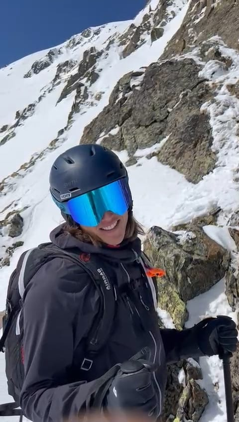
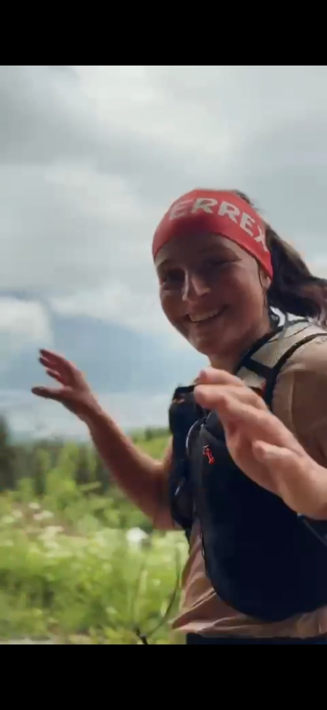
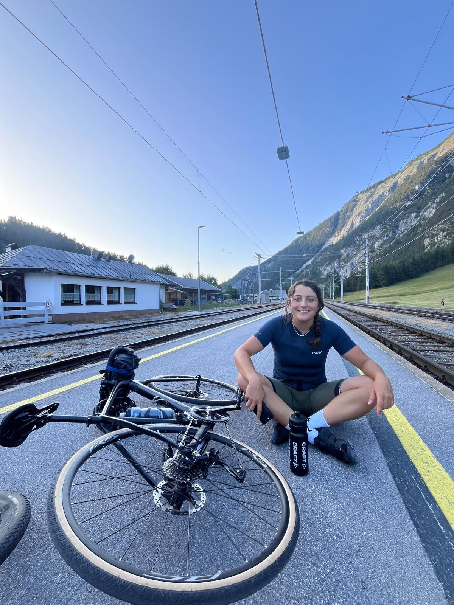
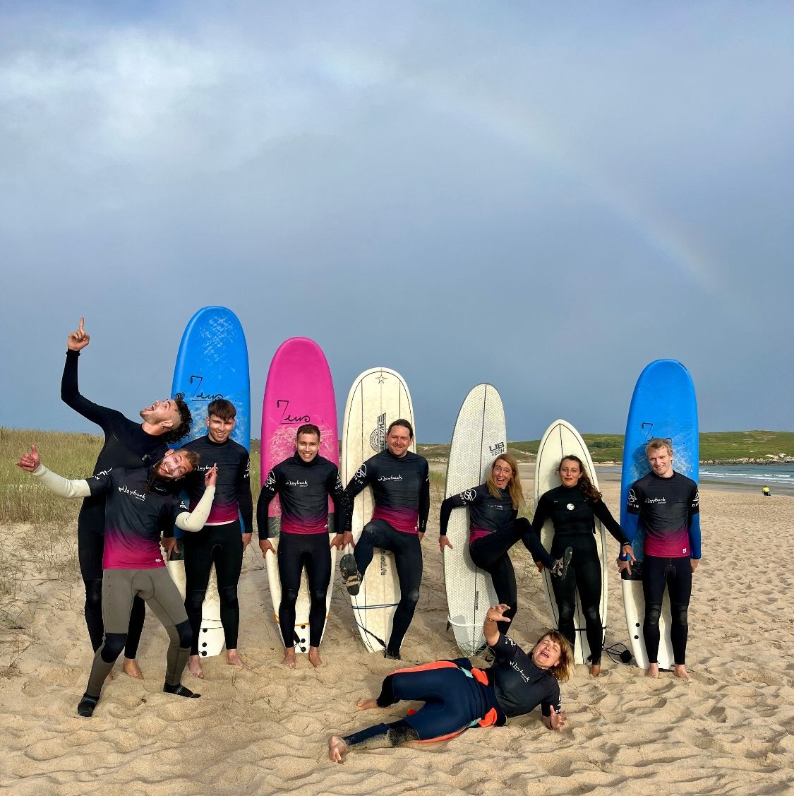
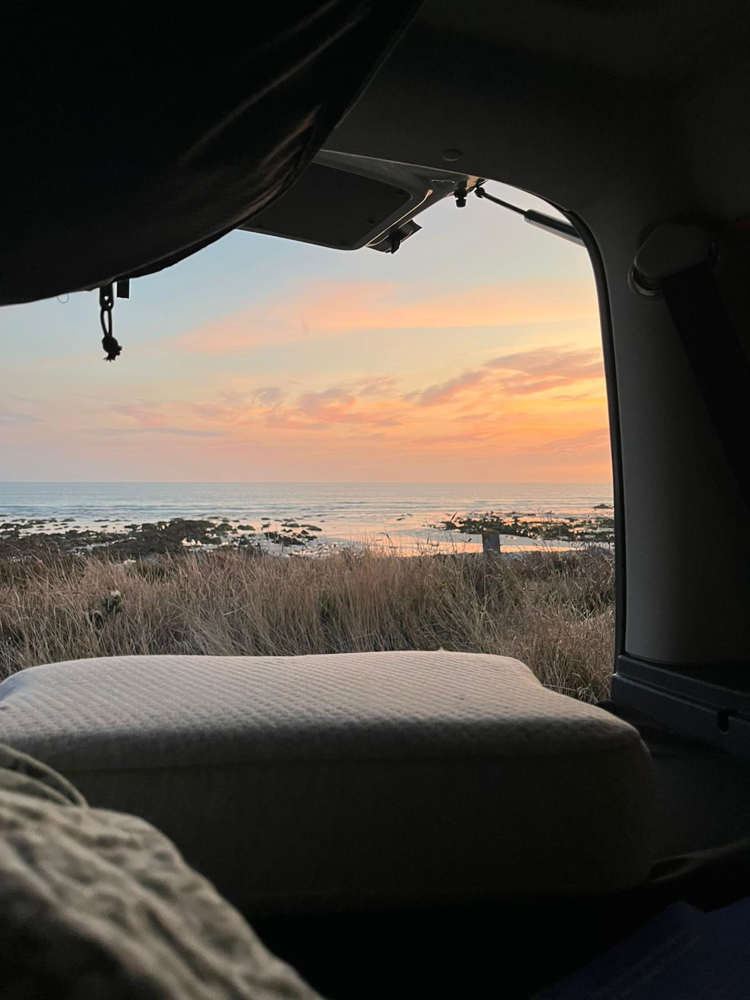

Skifahren & Skitouren
Schnee, Berge und Geschwindigkeit – Skifahren ist meine große Leidenschaft. Ob auf der Piste oder auf einer langen Skitour durch unberührte Hänge: Der Winter ist meine liebste Jahreszeit!
Piste Skitour Tirol
Wandern & Trailrunning
Die Berge rund um Innsbruck sind mein Spielplatz. Ob gemütliche Wanderung oder schneller Trailrun – in der Natur finde ich meinen Ausgleich und meine Energie.
Alpen Trail Natur
Radfahren
Auf zwei Rädern durch die schönsten Landschaften – Radtouren sind für mich pure Freiheit. Von kurzen Ausfahrten bis zu mehrtägigen Bikepacking-Abenteuern.
MTB Bikepacking Alpen
Surfen
Wellen reiten im Atlantik – am liebsten in Spanien oder Portugal! Das Surfen ist mein perfekter Gegenpol zu den Bergen: Salz, Sonne, Meer und das Gefühl, auf dem Wasser zu fliegen. 🌊
Atlantik Spanien Portugal
Camping & Reisen
Zelt aufschlagen, Feuer machen, Sterne schauen – Camping ist für mich die schönste Art zu reisen. Besonders in Spanien und Portugal fühle ich mich wie zu Hause. 🌅
Camping Spanien Portugal